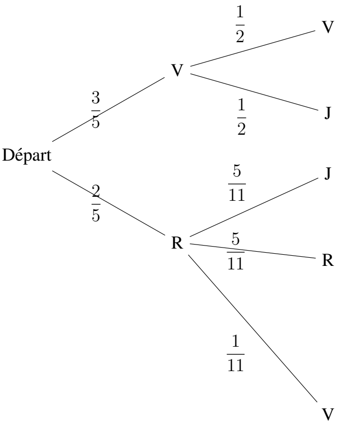
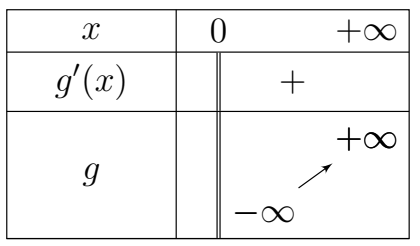
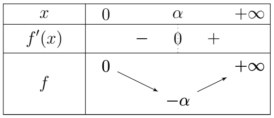
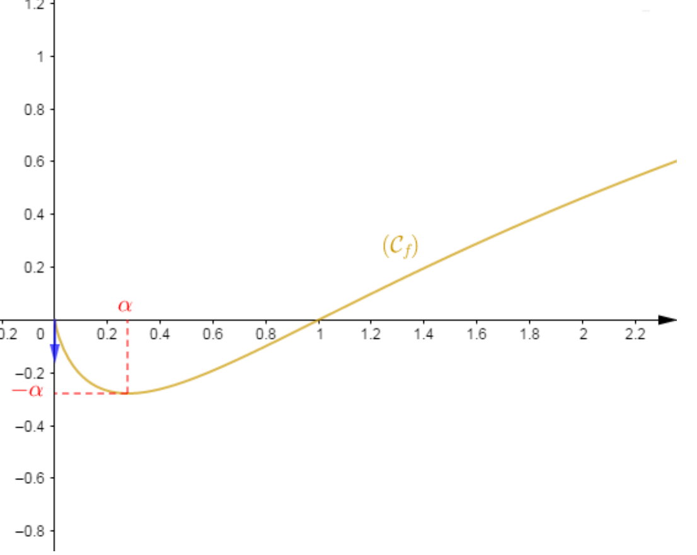

📝 Correction du devoir n°2 du 2nd semestre
-
On considère dans \( \mathbb{C} \) le polynôme \( P(z)=z^3-5z^2+19z+25 \).
-
Montrons que \( -1 \) est solution de l'équation \( P(z)=0 \).
\(-1\text{ est solution ssi }P(-1)=0\)
\[ \begin{aligned} P(z) &=(-1)^3-5(-1)^2+19(-1)+25\\ &=-1-5-19+25\\ &=-25+25\\ &=0 \end{aligned} \]\(P(-1)=0\) donc \(-1\) est bien solution.
\[ \mathbf{ P(-1)=0 \text{ donc -1 est bien solution } \hspace{3.6cm} \textbf{(0,25 pt)} } \] -
Déduisons-en les solutions dans \( \mathbb{C} \) de l'équation \( P(z)=0 \).
1 -5 19 25 -1 -1 6 -25 1 -6 25 0 Donc \(P(z)=(z+1)(z^2-6z+25)\).
\[ \begin{aligned} P(z)=0 &\implies (z+1)(z^2-6z+25)=0\\ &\implies (z+1)=0 \text{ ou } (z^2-6z+25)=0\\ &\implies \hspace{3cm} \Delta'=(3)^2-25\\ &\implies \hspace{3.6cm} =(3)^2-25\\ &\implies \hspace{3.6cm} =-16\\ &\implies \hspace{3.6cm} =4i\\ &\implies z=-1 \text{ ou } z=3-4i \text{ ou } z=3+4i \end{aligned} \]\[ \mathbf{ S= \left\lbrace -1,3-4i,3+4i \right\rbrace } \hspace{3.6cm} \textbf{(1,25 pt)} \]
-
-
On considère les points \(A\), \(B\), \(C\) et \(D\) d'affixes respectives :
\[ z_A=-1;\;z_B=3+4i;\;z_C=3-4i;\;z_D=-7z_A. \]-
On note \(z_1\) et \(z_2\) les affixes respectives des vecteurs \(\overrightarrow{AB}\) et \(\overrightarrow{DC}\).
Montrons que \(\overrightarrow{AB}\) et \(\overrightarrow{DC}\) sont parallèles.
\(\overrightarrow{AB}\) et \(\overrightarrow{DC}\) sont \(||\) ssi \(\overrightarrow{AB}=k\overrightarrow{DC}\) avec \(k\in\mathbb{R}^{*}\).
En version complexe : \(\dfrac{z_1}{z_2}=k\in\mathbb{R}^{*}\).
\[ \begin{aligned} \frac{z_1}{z_2} &=\frac{z_B-z_A}{z_C-z_D}\\ &=\frac{3+4i-(-1)}{3-4i-(-7(-1))}\\ &=\frac{3+4i+1}{3-4i-7}\\ &=\frac{4+4i}{-4-4i}\\ &=-1\in\mathbb{R}^{*} \end{aligned} \]\[ \mathbf{ \text{Comme } \frac{z_B-z_A}{z_C-z_D}\in\mathbb{R}^{*} \text{ donc } \overrightarrow{AB}||\overrightarrow{DC} \hspace{3.6cm} \textbf{(01 pt)} } \] -
Calculons \( |z_1| \) et \( |z_2| \).
\[ \begin{aligned} |z_1| &=|4+4i|\\ &=4|1+i|\\ &=4\sqrt{2} \end{aligned} \]Par analogie
\( |z_2|=4\sqrt{2} \)
\[ \mathbf{ |z_1|=4\sqrt{2} \text{ et } |z_2|=4\sqrt{2} \hspace{3.6cm} \textbf{(0,25 pt)} } \]Interprétons géométriquement le résultat. (0,25 pt)
\( |z_1|=|z_B-z_A|=4\sqrt{2} \text{ Donc } \|\overrightarrow{AB}\|=4\sqrt{2}\)
\( |z_1|=|z_C-z_D|=4\sqrt{2} \text{ Donc } \|\overrightarrow{DC}\|=4\sqrt{2}\)
\[ \mathbf{ \overrightarrow{AB} \text{ et } \overrightarrow{DC} \hspace{3.6cm} \textbf{(0,25 pt)} } \] -
On note \(z_3\) l'affixe du vecteur \(\overrightarrow{BD}\).
Comparons \( |z_1| \) et \( |z_3| \).
\[ \begin{aligned} |z_3| &=|z_D-z_B|\\ &=|7-(3+4i)|\\ &=|4-4i|\\ &=4\sqrt{2} \end{aligned} \]Interprétons géométriquement le résultat.
\( |z_3|=|z_D-z_B|=4\sqrt{2} \text{ Donc } \|\overrightarrow{DB}\|=4\sqrt{2}\)
\[ \mathbf{ \text{Donc } |z_1|=|z_3| \hspace{3.6cm} \textbf{(0,25 pt)} } \] -
Calculons \( \arg\left(\dfrac{z_1}{z_3}\right) \).
\[ \begin{aligned} \arg\left(\frac{z_1}{z_3}\right) &=\arg\left(\frac{4+4i}{4-4i}\right)\\ &=\arg\left(\frac{1+i}{1-i}\right)\\ &=\arg(1+i)-\arg(1-i)\\ &=\frac{\pi}{4}-\left(-\frac{\pi}{4}\right)\\ &=\frac{\pi}{2} \end{aligned} \]\[ \mathbf{ \text{Donc } \arg\left(\frac{z_1}{z_3}\right) = \frac{\pi}{2} \hspace{3.6cm} \textbf{(0,25 pt)} } \]Interprétons géométriquement le résultat.
\[ \begin{aligned} \arg\left(\frac{z_1}{z_3}\right) &=\arg\left(\frac{z_B-z_A}{z_D-z_B}\right)\\ &=(\overrightarrow{BD},\overrightarrow{AB}) \end{aligned} \]L'angle \((\overrightarrow{BD},\overrightarrow{AB})\) mesure \(\dfrac{\pi}{2}\).
-
Déduisons-en la nature précise du quadrilatère \(ABDC\). (1 pt)
\(AB=CD=BD\) et \((\overrightarrow{BD},\overrightarrow{AB}) =\dfrac{\pi}{2}\), donc \(ABDC\) est un carré.
-
A)
-
Si la première boule tirée est verte, on la met dans \(U_2\).
Dans ce cas, \(U_2\) comporte maintenant 5 boules vertes \(V\) et 5 boules jaunes \(J\).
On a par conséquent :
\[ p(V_2 \mid V_1)=\frac{5}{10} \Rightarrow p(V_2 \mid V_1)=\frac{1}{2} \] -
De même,
\[ p(V_2 \mid R_1)=\frac{1}{11} \] -
Dressons un arbre pondéré de la situation.

D'après la formule des probabilités totales,
\[ p(V_2)=p(V_2\mid V_1)p(V_1)+p(V_2\mid R_1)p(R_1) \]Soit :
\[ p(V_2) = \frac{1}{2}\times\frac{3}{5} + \frac{1}{11}\times\frac{2}{5} \Rightarrow p(V_2)=\frac{37}{110} \] -
De manière analogue,
\[ p(J_2) = p(J_2\mid V_1)p(V_1) + p(J_2\mid R_1)p(R_1) \]\[ = \frac{1}{2}\times\frac{3}{5} + \frac{1}{11}\times\frac{2}{5} \]\[ = \frac{53}{110} \]On trouve :
\[ \mathbf{ p(J_2)=\frac{53}{110} } \] -
De manière analogue à la question 3, on a :
\[ p(R_2) = p(R_2\mid V_1)p(V_1) + p(R_2\mid R_1)p(R_1) \]\[ = 0+\frac{5}{11}\times\frac{2}{5} \]\[ = \frac{2}{11} \]On trouve :
\[ \mathbf{ p(R_2)=\frac{2}{11} } \]
B)
-
La loi de probabilité de \(X\) est donnée par le tableau suivant :
\(X\) \(1000\) \(500\) \(-500\) \(p(X)\) \(\dfrac{37}{110}\) \(\dfrac{53}{110}\) \(\dfrac{2}{11}\) -
\[ E(X)=\sum x_i p_i \]\[ E(X) = \left( 1000\times\frac{37}{110} \right) + \left( 500\times\frac{53}{110} \right) - \left( 500\times\frac{2}{11} \right) \]\[ E(X)=\frac{5350}{11} \]
Donc,
\[ \mathbf{ E(X)=\frac{5350}{11} } \]
C)
-
On a affaire à un schéma de Bernoulli, la probabilité du succès étant \(p(E)=\dfrac{37}{110}\) et le nombre d'épreuves étant 15.
La probabilité d'avoir exactement 8 succès est :
\[ P_8 = C_8^{15} \left( \frac{37}{110} \right)^8 \left( \frac{73}{110} \right)^7 \] -
C'est l'événement : \(\underbrace{\text{SSSSSSSS}}_{\text{8 fois}} \quad \underbrace{\text{EEEEEEE}}_{\text{7 fois}}\) (8 succès consécutifs suivis de 7 échecs consécutifs).
Sa probabilité est :
\[ p(S)^8\times p(E)^7 = \left( \frac{37}{110} \right)^8 \times \left( \frac{73}{110} \right)^7 \approx 9.3\times10^{-6} \] -
L'événement contraire est :
\[ P_0 = C_0^{15} \left( \frac{37}{110} \right)^0 \left( \frac{73}{110} \right)^{15} \]La probabilité cherchée est donc :
\[ \begin{aligned} p &=1-P_0\\ &=1- \left( \frac{73}{110} \right)^{15}\\ &\approx0.997 \end{aligned} \]
Soit \(g\) la fonction définie sur \(]0;+\infty[\) par :
-
Dressons le tableau de variation de \(g\).
Soit \(g'\) la fonction dérivée de \(g\), alors on a :
\[ g'(x)=1+\frac{1}{x} \]Donc, \(\forall x\in]0;+\infty[,\;g'(x)>0\).
Par suite, \(g\) est strictement croissante sur \(]0;+\infty[\).
Par ailleurs,
\[ \begin{aligned} \lim\limits_{x\to0^+}g(x) &=\lim\limits_{x\to0^+}(1+x+\ln x)\\ &=-\infty \end{aligned} \]\[ \begin{aligned} \lim\limits_{x\to+\infty}g(x) &=\lim\limits_{x\to+\infty}(1+x+\ln x)\\ &=+\infty \end{aligned} \]D'où, le tableau de variations de \(g\) suivant :

-
Montrons qu'il existe un unique réel \(\alpha\) solution de l'équation \(g(x)=0\).
En effet, \(g\) est continue et strictement croissante sur \(]0;+\infty[\).
Or, \(0\in]-\infty;+\infty[\) donc, d'après le théorème de la bijection, il existe un unique réel \(\alpha\in]0;+\infty[\) tel que \(g(\alpha)=0\).
Vérifions que \(\alpha\) appartient à \(]0.2;0.3[\).
Soit : \(g(0.2)=1+0.2+\ln(0.2)=-0.40\) et \(g(0.3)=1+0.3+\ln(0.3)=0.09\).
Alors, \(g(0.2)\times g(0.3)=-0.36<0\).
Ainsi, \(g\) est continue sur \(]0.2;0.3[\) et \(g(0.2)\times g(0.3)<0\).
Donc, d'après le corollaire du théorème des valeurs intermédiaires, il existe \(\beta\in]0.2;0.3[\) solution de l'équation \(g(x)=0\).
L'unique solution de cette équation est le réel \(\alpha\).
Par conséquent, \(\alpha=\beta\). D'où, \(\alpha\in]0.2;0.3[\).
-
En déduisons le signe de \(g\) sur \(]0;+\infty[\).
D'après les questions précédentes, on peut alors écrire :
\[ g([0;\alpha])=]-\infty;0] \qquad\text{et}\qquad g([\alpha;+\infty[)=[0;+\infty[ \]Ainsi,
\[ g(x)\le0\text{ sur } ]0;\alpha[ \qquad\text{et}\qquad g(x)\ge0\text{ sur } [\alpha;+\infty[ \] -
Établissons la relation \(\ln(\alpha)=-1-\alpha\).
D'après la question 2), \(\alpha\) est l'unique solution de l'équation \(g(x)=0\).
Ce qui signifie que \(g(\alpha)=0\).
Par suite,
\[ g(\alpha)=0 \iff 1+\alpha+\ln\alpha=0 \]\[ \iff \ln\alpha=-1-\alpha \]D'où, la relation :
\[ \mathbf{\ln(\alpha)=-1-\alpha} \]
On considère la fonction \( f \) définie par :
-
Montrons que \( f \) est continue en 0 puis sur \( ]0;+\infty[ \).
Calculons \( \lim\limits_{x\to0^+}f(x) \).
\[ \begin{aligned} \lim\limits_{x\to0^+}f(x) &=\lim\limits_{x\to0^+}\frac{x\ln x}{1+x}\\ &=\lim\limits_{x\to0^+}\frac{0}{1}\\ &=0 \end{aligned} \]Donc, \( \lim\limits_{x\to0^+}f(x)=f(0) \).
D'où, \( f \) est continue en 0.
Par ailleurs, \( \forall x_0\in]0;+\infty[ \), \( f \) est continue en \( x_0 \).
Par conséquent, \( f \) est continue sur \( ]0;+\infty[ \).
-
Étudions la dérivabilité de \( f \) en 0.
Calculons :
\[ \lim\limits_{x\to0^+}\frac{f(x)-f(0)}{x-0} \]On a :
\[ \begin{aligned} \lim\limits_{x\to0^+}\frac{f(x)-f(0)}{x} &=\lim\limits_{x\to0^+}\frac{x\ln x}{(1+x)x}\\ &=\lim\limits_{x\to0^+}\frac{x\ln x}{x(1+x)}\\ &=\lim\limits_{x\to0^+}\frac{\ln x}{1+x}\\ &=\lim\limits_{x\to0^+}\frac{-\infty}{1}\\ &=-\infty \end{aligned} \]Donc :
\[ \mathbf{ \lim\limits_{x\to0^+}\frac{f(x)-f(0)}{x} =-\infty } \]Ainsi, la fonction \( f \) n'est pas dérivable en 0.
Interprétons graphiquement ce résultat.
Comme
\[ \lim\limits_{x\to0^+} \frac{f(x)-f(0)}{x-0} =-\infty \]alors la courbe représentative de \( f \) admet une demi-tangente verticale au point d'abscisse 0.
-
Déterminons la limite de \( f \) en \( +\infty \).
\[ \begin{aligned} \lim\limits_{x\to+\infty}f(x) &=\lim\limits_{x\to+\infty}\frac{x\ln x}{1+x}\\ &=\lim\limits_{x\to+\infty} \frac{x}{x} \times \frac{\ln x}{\frac{1+x}{x}}\\ &=\lim\limits_{x\to+\infty} \frac{\ln x}{\frac{1}{x}+1}\\ &=\lim\limits_{x\to+\infty} \frac{\infty}{0+1}\\ &=+\infty \end{aligned} \] -
Montrons que, quel que soit \( x \) élément de \( ]0;+\infty[ \), \( f'(x)=\dfrac{g(x)}{(1+x)^2} \).
On a : \( \forall x\in]0;+\infty[ \), \( f(x)=\dfrac{x\ln x}{1+x} \).
Par suite :
\[ \begin{aligned} f'(x) &= \frac{(1+\ln x)(1+x)-x\ln x}{(1+x)^2}\\ &= \frac{1+x+\ln x+x\ln x-x\ln x}{(1+x)^2}\\ &= \frac{1+x+\ln x}{(1+x)^2}\\ &= \frac{g(x)}{(1+x)^2} \end{aligned} \]\[ \mathbf{ f'(x)=\frac{g(x)}{(1+x)^2} } \]En déduisons le signe de \( f'(x) \) sur \( ]0;+\infty[ \).
Comme \( (1+x)^2>0 \), le signe de \( f'(x) \) dépend uniquement du signe de \( g(x) \).
Or, \( g(x) \) est négatif sur \( ]0;\alpha[ \) et positif sur \( [\alpha;+\infty[ \).
Par conséquent :
\[ \begin{cases} f'(x)\le0 \text{ sur } ]0;\alpha[\\ f'(x)\ge0 \text{ sur } [\alpha;+\infty[ \end{cases} \] -
Montrons que \( f(\alpha)=-\alpha \).
Soit :
\[ f(\alpha) = \frac{\alpha\ln\alpha}{1+\alpha} \]Or, dans la première partie, à la question 4), on avait : \( \ln\alpha=-1-\alpha \).
Donc, en remplaçant \( \ln\alpha \) par son expression, on obtient :
\[ \begin{aligned} f(\alpha) &= \frac{\alpha\ln\alpha}{1+\alpha}\\ &= \frac{\alpha(-1-\alpha)}{1+\alpha}\\ &= \frac{-\alpha(1+\alpha)}{1+\alpha}\\ &= -\alpha \end{aligned} \]\[ \mathbf{ f(\alpha)=-\alpha } \] -
Dressons le tableau de variations de la fonction \( f \).

-
Représentons la courbe de \( f \) dans le plan muni du repère orthonormal \( (O;\vec{i},\vec{j}) \). Unité graphique : 5 cm. Prendre \( \alpha\approx0,3 \).
